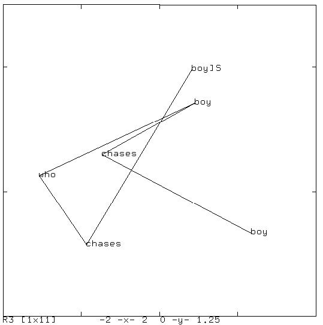
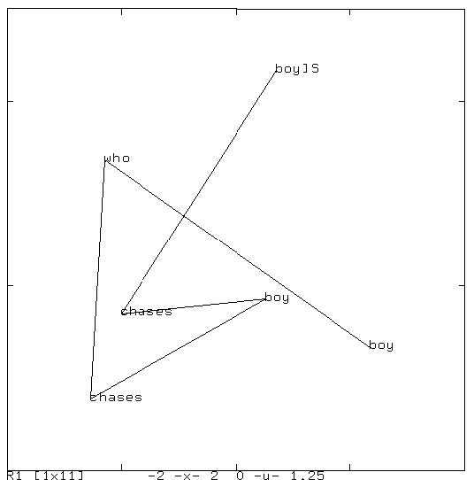
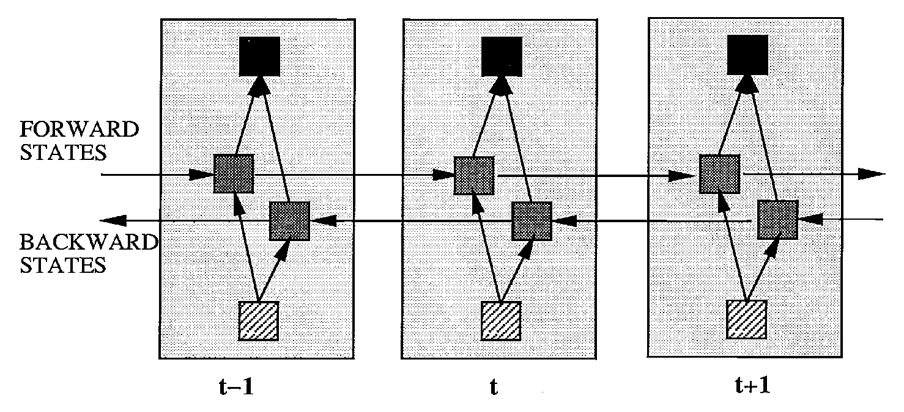
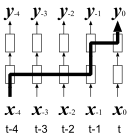
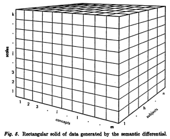
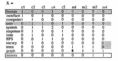

ディープラーニングの心理学的解釈 (心理学特講IIIA)¶
0.1 デモ¶
- 前回できなかった GAN のデモ TL-GAN (transparent latent-space GAN)

- 漱石「こころ」冒頭部分を文字ベースリカレントニューラルネットワークで言語モデル javascript 版
- 日本国憲法第 9 条をリカレントニューラルネットワークで理解する

- 書画のデモ
- word2vecのデモ
0.2 再帰型 (リカレント) ニューラルネットワークモデル¶
リカレントニューラルネットワークモデル (Recurrent Neural Networks, 以下 RNN) は 系列情報処理 (serial information processings) を扱うニューラルネットワークモデル です。 観察された証拠から次に生じる事象を予想することは，生物の生存にとって意味ある情報処理であると考えます。 その適用範囲を思いつくままに考えてみると以下のような事柄が含まれるでしょう。
- 生物の生存戦略
- 制御，予測。天気予報，ロケットなどの弾道制御
- データ処理
- 未来予想，SF 的，心理学的，哲学的，歴史的意味あいも含めて。身近な例では占いや経済予測も含まれます
一方，機械学習，ディープラーニングの分野では，系列情報処理の中の 言語モデル (Language models) として頻用されています。 昨今の 自然言語処理 (Natural Language Processings, 以下 NLP) では 機械翻訳 や種々の処理に採用されてきました。 2014 年以降の話題として 注意 (attention) を言語モデルに取り込んで精度向上を目指す動向が活発です。 注意 と 言語 とはどちらも 心理学分野 で注目すべき話題でしょう。 RNN の応用可能性は神経心理学にとって一考の価値があるモデルと言えます。
2018 年，複数の言語課題で人間の成績を凌駕する自然言語処理モデルが提案されました。 このことから自然言語処理モデルを神経心理学に応用する機運は熟していると考えます。
0.3 リカレントニューラルネットワークの成果¶
- 手書き文字認識 Graves(2009)
- 音声認識 Graves (2013), Grave and Jaitly (2014)
- 手書き文字生成 Graves (2013)
- 系列学習 Sutskever (2014)
- 機械翻訳 Bahdanau (2014)
- 機械翻訳 Luong (2015)
- 画像脚注付け Vinyals et. al(2014)
- 注意つき画像脚注生成
- 構文解析 Vinayals et. al., (2014)
- プログラムコード生成 Zaremba (2015)
- 対話生成 Vinyals (2014)
- ニューラルチューリングマシン NTM Graves et. al, (2 014)
- 世界モデル Ha and Schmithuber (2018)^about_world_model
我々は現実世界の表象するコンセプトを選んでその関係を使うだけだ(浅川拙訳)とフォレスター は言ったそうです。
0.4 参考文献¶
- 浅川伸一 (2003) 単純再帰型ニューラルネットワークの心理学モデルとしての応用可能性, 心理学評論, 46(2), 274-287.
- 浅川伸一 (2016) リカレントニューラルネットワーク, 日本人工知能学会編，人工知能学事典新版，共立出版
- 浅川伸一 (2016) リカレントニューラルネットワークによる文法学習, 日本人工知能学会編，人工知能学事典新版，共立出版
1. 自然言語処理¶
1.1. 自然言語処理前史¶
- 第一次ブーム 1960 年代 極度の楽観論: 辞書を丸写しすれば翻訳は可能だと思っていた，らしい...
- 第二次ブーム 統計的自然言語処理
- 統計的言語モデル statistical language model
- Chris Manning (スタンフォード大学)) and Schutze (1999) 著。定番の教科書 Fundations of Statistical Natural Language Processing, あるいは こちら
- もう一つ定評の教科書 Jurafsky 著) と Martin 著 Speech and Language Processing は 改訂版 が出版されました。ニューラルネットワークによる言語モデルも載っています。
1.2. 用語解説¶
- BoW: Bag of Words 単語の袋。ある文章を表現する場合に，各単語の表現を集めて袋詰めしたとの意味。従って語順が考慮されません。"犬が男を噛んだ" と "男が犬を噛んだ" では同じ表現になります。LSA, LDA, fastText なども同じような表現を与えます。
- TF-IDF: 単語頻度 (Term Frequency) と 逆(Inverse) 文書頻度 (Document Frequency) で文書のベクトル表現を定義する手法です。何度も出現する単語は重要なので単語頻度が高い文書には意味があります。一方，全ての文書に出現する単語は重要とは言えないので単語の出現る文書の個数の逆数の対数変換を用います。このようにしてできた文章表現を TF-IDF と言います。
言語モデル Language model¶
- 文献では言語モデルを LM と表記される。
- 統計的言語モデル statistical language model。言語系列に確率を与えるモデルの総称。良い言語モデル LM は，有意味文に高い確率を与え，曖昧な文には低い確率を与える。言語モデルは人工知能の問題。
- n-gram 言語モデル
- 指標: BELU, perplexity
- 課題: NER, POS, COL, Summary, QA, Translation
1.3. N-グラム言語モデル¶
- 類似した言語履歴 について, n-gram 言語モデルは言語履歴 によって言語が定まることを言います。
- 実用的には n-gram 言語モデルは 語の単語系列パターンを表象するモデルです。
- n-gram 言語モデルでは の次数増大に従って，パラメータは指数関数的に増大します。
- すなわち高次 n グラム言語モデルのパラメータ推定に必要な言語情報のコーパスサイズは，次数増大に伴って，急激不足します
- Wikipedia からの引用では次式:
- 上式では ですが，伝統的に グラムと呼びます。 であれば直前の 1 つを考慮して 次語を予測することになります。
余談[^gram] ですが
- : ヌルグラム null-gram
- : ユニグラム uni-gram
- : バイグラム bi-gram
- : トリグラム tri-gram
などと呼ばれます。
[^gram]: 五月蝿いことを言えば Manning (1999, p.193) によると単語 gram はギリシャ語由来の単語だそうです。従って gram に付ける数接頭辞もギリシャ語である教養を持つべきです。そうすると : mono-gram, : di-gram, : tetra-gram が教養です。 はギリシャ，ローマ共通で tri-gram です。日常会話では をクワッドグラム(ラテン語由来)やフォーグラムと呼ぶことも多いです。
1.4. ニューラルネットワーク言語モデルあるいはミコロフ革命¶


- スパースな言語履歴 は低次元空間へと射影される。類似した言語履歴は群化する
- 類似の言語履歴を共有することで，ニューラルネットワーク言語モデルは頑健 (訓練データから推定すべきパラメータが少ない)。
1.5 ニューラルネットワーク言語モデル NNLM フィードフォワード型 NNLM¶
 図: フィードフォワード型ニューラルネットワーク言語モデル NNLM [@2003Bengio],[@2007Schwenk].
図: フィードフォワード型ニューラルネットワーク言語モデル NNLM [@2003Bengio],[@2007Schwenk].
リカレントニューラルネットワーク言語モデル RNNLM¶

- 入力層 と出力層 は同一次元，総語彙数に一致。(約一万語から20万語)
- 中間層 は相対的に低次元 (50から1000ニューロン)
- 入力層から中間層への結合係数行列 ，中間層から出力層への結合係数行列 ，
- 再帰結合係数行列 がなければバイグラム(2-グラム)ニューラルネットワーク言語モデルと等しい
1.6. RNNLM の学習 時間貫通バックプロパゲーション BPTT¶

2011 Mikolov Fig.3
- 再帰結合係数行列 を時間展開し，多層ニューラルネットワークとみなして学習を行う
- 時間貫通バックプロパゲーションは Backpropagation Through Time (BPTT) といいます
1.7. 時間貫通バックプロパゲーション BPTT¶

図: バッチ更新の例。赤い矢印は誤差勾配がリカレントニューラルネットワーク
1.8. 文字ベースか単語ベースか？¶
- Pros/Cons
- OOV problems。OOV: Out of Vocabulary 問題。ソーシャルメディアなどを活用する場合不可避の問題
2. 再帰型ニューラルネットワーク¶
2.1. NETtalk¶
系列情報処理を扱った初期のニューラルネットワーク例として NETTalk が挙げられます。 NETTalk[^NETTalk] は文字を音読するネットワークです。下図のような構成になっています。 下図のようにアルファベット 7 文字を入力して，空白はアンダーラインで表現されています，中央の文字の発音を学習する 3 層のニューラルネットワークです。NETTalk は 7 文字幅の窓を移動させながら 逐次中央の文字の発音を学習しました。たとえば /I ate the apple/ という文章では "the" を "ザ" ではなく "ジ" と発音することになります。
印刷単語の読字過程のニューラルネットワークモデルである SM89[^SM89], PMSP96[^PMSP96] で用いられた発音表現は ARPABET の亜種です。Python では nltk ライブラリを使うと ARPABET の発音を得ることができます(ARPABET のデモ )。
)。
[^NETTalk]: Sejnowski, T.J. and Rosenberg, C. R. (1987) Parallel Networks that Learn to Pronounce English Text, Complex Systems 1, 145-168.
[^SM89]: Seidenberg, M. S. & McClelland, J. L. (1989). A distributed, developmetal model of word recognition and naming. Psychological Review, 96(4), 523–568.
[^PMSP96]: Plaut, D. C., McClelland, J. L., Seidenberg, M. S. & Patterson, K. (1996). Understanding normal and impaired word reading: Computational principles in quasi-regular domains. Psychological Review, 103, 56–115.
 Sejnowski (1986) Fig. 2
Sejnowski (1986) Fig. 2
2.2. 単純再帰型ニューラルネットワーク¶
NETTalk を先がけとして 単純再帰型ニューラルネットワーク Simple Recurrent Neural networks (SRN) が提案されました。 発案者の名前で Jordan ネット[^JordanNet]，Elman ネット[^ElmanNet] と呼ばれます。
[^JordanNet]: Joradn, M.I. (1986) Serial Order: A Parallel Distributed Processing Approach, UCSD tech report.
[^ElmanNet]: Elman, J. L. (1990)Finding structure in time, Cognitive Science, 14, 179-211.
Jordan ネットも Elman ネットも上位層からの 帰還信号 を持ちます。これを フィードバック結合 と呼び，位置時刻前の状態が次の時刻に使われます。Jordan ネットでは一時刻前の出力層の情報が用いられます(下図)。

図：マイケル・ジョーダン発案ジョーダンネット [@1986Jordan]
[^jordan_ai_revolution_not_yet]: 彼は(も？)神様です。多くの機械学習アルゴリズムを提案し続けている影響力のある人です。長らく機械学習の国際雑誌の編集長でした。2018年 AI 革命は未だ起こっていない と言い出して議論を呼びました。
一方，Elman ネットでは一時刻前の中間層の状態がフィードバック信号として用いられます。

図：ジェフ・エルマン発案のエルマンネット[@lman1990],[@Elman1993]
どちらも一時刻前の状態を短期記憶として保持して利用するのですが，実際の学習では一時刻前の状態をコピーして保存しておくだけで，実際の学習では通常の 誤差逆伝播法 すなわちバックプロパゲーション法が用いられます。上 2 つの図に示したとおり U と W とは共に中間層への結合係数であり，V は中間層から出力層への結合係数です。Z=I と書き点線で描かれている矢印はコピーするだけですので学習は起こりません。このように考えれば SRN は 3 層のニューラルネットワークであることが分かります。
SRN はこのような単純な構造にも関わらず チューリング完全 であろうと言われてきました。 すなわちコンピュータで計算可能な問題はすべて計算できるくらい強力な計算機だという意味です。
- Jordan ネットは出力層の情報を用いるため 運動制御 に
- Elan ネットは内部状態を利用するため 言語処理 に
それぞれ用いられます。従って 失行 aparxia (no matter what kind of apraxia such as 'ideomotor' or 'conceptual')，行為障害 のモデルを考える場合 Jordan ネットは考慮すべき選択肢の候補の一つとなるでしょう。
2.3. リカレントニューラルネットワークの時間展開¶
一時刻前の状態を保持して利用する SRN は下図左のように描くことができます。同時に時間発展を考慮すれば下図右のように描くことも可能です。
 Time unfoldings of recurrent neural networks
Time unfoldings of recurrent neural networks
上図右を頭部を 90 度右に傾けて眺めてください。あるいは同義ですが上図右を反時計回りに 90 度回転させたメンタルローテーションを想像してください。このことから "SRN とは時間方向に展開したディープラーニングである" ことが分かります。
2.4. エルマンネットによる言語モデル¶
下図に エルマン が用いたネットワークモデルを示しました。図中の数字はニューロンの数を表します。入力層と出力層のニューロン数 26 とは，もちいた語彙数が 26 であったことを表します。

from [@Elman1991startingsmall]
エルマンは，系列予測課題によって次の単語を予想することを繰り返し学習させた結果，文法構造がネットワークの結合係数として学習されることを示しました。Elman ネットによって，埋め込み文の処理，時制の一致，性や数の一致，長距離依存などを正しく予測できることが示されました(Elman, 1990, 1991, 1993)。
- S NP VP “.”
- NP PropN | N | N RC
- VP V (NP)
- RC who NP VP | who VP (NP)
- N boy | girl | cat | dog | boys | girls | cats | dogs
- PropN John | Mary |
- V chase | feed | see | hear | walk | live | chases | feeds | seeds | hears | walks | lives
これらの規則にはさらに 2 つの制約があります。
- N と V の数が一致していなければならない
- 目的語を取る動詞に制限がある。例えばhit, feed は直接目的語が必ず必要であり，see とhear は目的語をとってもとらなくても良い。walk とlive では目的語は不要である。
文章は 23 個の項目から構成され，8 個の名詞と 12 個の動詞，関係代名詞 who，及び文の終端を表すピリオドです。この文法規則から生成される文 S は，名詞句 NP と動詞句 VP と最後にピリオドから成り立っている。 名詞句 NP は固有名詞 PropN か名詞 N か名詞に関係節 RC が付加したものの何れかとなります。 動詞句 VP は動詞 V と名詞句 NP から構成されるが名詞句が付加されるか否かは動詞の種類によって定まる。 関係節 RC は関係代名詞 who で始まり，名詞句 NP と動詞句 VP か，もしくは動詞句だけのどちらかかが続く，というものです。
下図に訓練後の中間層の状態を主成分分析にかけた結果を示しました。"boy chases boy", "boy sees boy", および "boy walks" という文を逐次入力した場合の遷移を示しています。 同じ文型の文章は同じような状態遷移を辿ることが分かります。

下図は文 "boy chases boy who chases boy" を入力した場合の遷移図です。この文章には単語 "boy" が 3 度出てきます。それぞれが異なるけれど，他の単語とは異なる位置に附置されていることがわかります。 同様に 'chases" が 2 度出てきますが，やはり同じような位置で，かつ，別の単語とは異なる位置に附置されています。

同様にして "boy who chases boy chases boy" (男の子を追いかける男の子が男の子を追いかける) の状態遷移図を下図に示しました。

さらに複雑な文章例 "boy chases boy who chases boy who chases boy" の状態遷移図を下図に島します。

Elman ネットが構文，文法処理ができるということは上図のような中間層での状態遷移で同じ単語が 異なる文位置で異なる文法的役割を担っている場合に，微妙に異なる表象を，図に即してで言えば， 同じ単語では，同じような場所を占めるが，その文法的役割によって異なる位置を占めることが 示唆されます。このことから中間層の状態は異なる文章の表現を異なる位置として表現していることが考えられ， 後述する 単語の意味 や 自動翻訳 などに使われることに繋がります(浅川の主観半分以上)
2.5. Seq2sep 翻訳モデル¶
上記の中間層の状態を素直に応用すると 機械翻訳 や 対話 のモデルになります。
下図は初期の翻訳モデルである "seq2seq" の概念図を示しました。
"<eos>" は文末 end of sentence を表します。中央の "<eos>" の前がソース言語
であり，中央の "<eos>" の後はターゲット言語の言語モデルである SRN の中間層への
入力として用います。
注意すべきは，ソース言語の文終了時の中間層状態のみをターゲット言語の最初の中間層 の入力に用いることであり，それ以外の時刻ではソース言語とターゲット言語は関係が ないことです。逆に言えば最終時刻の中間層状態がソース文の情報全てを含んでいると みなすことです。この点を改善することを目指すことが 2014 年以降盛んに行われてきました。 顕著な例が後述する 双方向 RNN， LSTM を採用したり，注意 機構を導入することでした。

From [@2014Sutskever_Sequence_to_Sequence]
2.6. 多様な RNN とその万能性¶
双方向 RNN や LSTM を紹介する前に，カルパシーのブログ[^karpathy] から下図に引用します。 下の 2 つ図ではピンク色が入力層，緑が中間層，青が出力層を示しています。
[^karpathy]: 去年までスタンフォード大学の大学院生。現在はステラ自動車，イーロン・マスクが社長，の AI 部長さんです。図は彼のブログから引用です。蛇足ですがブログのタイトルが unreasonable effectiveness of RNN です。過去の偉大な論文 Wiegner (1960), Hamming (1967), Halevy (2009) からの パクリ 敬意を表したオマージュです。"unreasonable effectiveness of [science|mathematics|data]" www
 >
>
RNN variations from http://karpathy.github.io/2015/05/21/rnn-effectiveness/
- 上図最左は通常の多層ニューラルネットワークで画像認識，分類，識別問題に用いられます。
- 上図左から 2 つ目は，画像からの文章生成
- 上図中央，左から 3 つ目は，極性分析，文章のレビュー，星の数推定
- 上図右から 2 つ目は翻訳や文章生成
- 上図最右はビデオ分析，ビデオ脚注付け
などに用いられます。これまで理解を促進する目的で中間層をただ一層として描いてきました。 ですがが中間層は多層化されていることの方が多いこと，中間層各層のニューロン数は 1024 程度まで用いられていることには注意してください。
数は各層のニューロン数が 4 つである場合の数値例を示しています。入力層では ワンホット 表現[^onehot]
[^onehot]: ベクトルの要素のうち一つだけが "1" であり他は全て "0” である疎なベクトルのこと。一つだけが "熱い" あるいは "辛い" ベクトルと呼びます。以前は one-of- 表現 (MacKay の PRML など) と呼ばれていたのですが ワンホット表現，あるいは ワンホットベクトル (おそらく命名者は Begnio 一派)と呼ばれることが多いです。ワンホットベクトルを学習させると時間がかかるという計算上の弱点が生じます。典型的な誤差逆伝播法による学習では，下位層の入力値に結合係数を掛けた値で結合係数を更新します。従って，下位層の値のほとんどが "0" であるワンホットベクトルは学習効率が落ちることになります。そこで Elman はワンホットベクトルを実数値を持つ多次元ベクトルに変換してから用いることを行いました。上のエルマンネットによる文法学習において,ニューロン数 10 の単語埋め込み層と書かれた層がこれに該当します。単語埋め込み層を用いることで学習効率が改善し，後に示す word2vec などの 分散ベクトルモデル へと発展します。
 >
RNN variations from http://karpathy.github.io/2015/05/21/rnn-effectiveness/
>
RNN variations from http://karpathy.github.io/2015/05/21/rnn-effectiveness/
[@1991Siegelmann_RNN_universal] said Turing completeness of RNN.
2.7. 双方向 RNN BiRNN¶
RNN を改善するモデルとして 2 つ紹介します。一つは 双方向 RNN bidirectional RNN (BiRNN) で Shuster[^shuster]，別は LSTM です。ここでは BiRNN を扱います。下図に BiRNN の概念図を示しました。 BiRNN は RNN が 2 つ逆方向に走っていて互いに交わることはありません。 この意味では時間を逆向きに考えるだけなのでプログラム上の難しさは有りません。 時刻 での出力 を得るためには， までの順方法 RNN と までの逆方法 RNN を用いて予測します。 逆方法 RNN は未来から過去を予測することを意味します。物理的因果律に違反することになるので 気持ち悪いとも言えます。ですが英単語 "the" の発音は後続する名詞を知っていれば発音を 予測することは容易です。同様にフランス語の定冠詞を "ラ" にするか "ル" にするかは 後続する名詞の性が分かっていれば容易です。このように自然言語処理では BiRNN を使うと 精度向上が期待される場合頻用されます。ここには神経心理学的な意味づけと工学的価値との齟齬，乖離が あります。
[^shuter]: 提案当時 ATR と NICT 所属の博士課程研究員。現在は Google 所属。

下図に BiRNN の音声認識データセットを用いた性能比較を示しました。図中では "BiRNN" が "BRNN" と表記されています。

Shuster (1997) Fig.1, Tab. 2
2.8. 長距離依存¶
上では RNN は時間方向でのディープラーニング(深層学習)であると説明しました。 ですが過去の情報を用いるために，一時刻前，すなわち直前の情報ではなく過去のある時点での情報を保持しておいて使いたい場合がありまs。英語の関係代名詞節を名詞の修飾に用いるような 中央埋め込み文 では， 主語と動詞との間で時制の一致が必要ですが，主語の後に関係代名詞節が埋め込まれると，主語の時制や数を 覚えておく必要が生じます。
文 "boy that girls chase plays the guitar" では関係代名詞節内の主語 "girls" が複数形です。 この複数形 "girls" に引きづられて動詞 "plays" を "play" としては正しい文法になりません。
このように過去の情報を覚えておく必要があります。これを 長距離依存 long term dependency と言います。SRN は長距離依存解消のために学習時間が長くなるという問題点があります。 これは中間層の内容が時々刻々変化し続けるため，特定の内容を保持することが困難になると考えられます。 この長距離依存解消が難しいという短所は，記憶内容を保持しておく別の場所，短期記憶バッファを用意するなどの解消方法も存在します。一方，短期記憶を保持する機構をリカレントニューラルネットワーク内に組み込むという考え方もあります。後者の考え方を実現する方法として次に紹介する長=短期記憶モデルがあります。
 Schematic description of a long term dependency
2.9. 長=短期記憶 LSTM¶
長=短期記憶 (Long Short-Term Memory: LSTM, henceforth) はシュミットフーバー (Shumithuber, J.) 一派により提案された長距離依存解消のためのニューラルネットワークモデルです。 長距離依存を解消するためには，ある内容を保持し続けて必要に応じてその内容を表出する必要があります。 このことを実現するために，ニューロンへの入力に門 (gate) を置くことが提案されました。 下図に長=短期記憶モデルの概念図を示しました。

LSTM from [@2016Asakawa_AIdict]
上図の LSTM は一つのニューロンに該当します。このニューロンには 3 つのゲート(gate, 門) が付いています。 3 つのゲートは以下の名前で呼ばれます。
- 入力ゲート input gate
- 出力ゲート output gate
- 忘却ゲート forget gate
各ゲートの位置を上図で確認してください。入力ゲートと出力ゲートが閉じていれば，セルの内容(これまでは中間層の状態と呼んできました)が保持されることになります。 出力ゲートが開いている場合には，セル内容が出力されます。一方出力ゲートが閉じていればそのセル内容は出力されません。このように入力ゲートと出力ゲートはセル内容の入出力に関与します。 忘却ゲートはセル内容の保持に関与します。忘却ゲートが開いていれば一時刻前のセル内容が保持されることを意味します。反対に忘却ゲートが閉じていれば一時刻前のセル内容は破棄されます。全セルの忘却ゲートが全閉ならば通常の多層ニューラルネットワークであることと同義です。すなわち記憶内容を保持しないことを意味します。SRN でフィードバック信号が存在しない場合に相当します。セルへの入力は，
- 下層からの信号，
- 上層からの信号, すなわち Jordan ネットの帰還信号
- 自分自身の内容，すなわち Elman ネットの帰還信号
が用いられます。これら入力信号が
- 入力信号そのもの
- 入力ゲートの開閉制御用信号
- 出力ゲートの開閉制御用信号
- 忘却ゲートの開閉制御用信号
という 4 種類に用いられます。従って LSTM のパラメータ数は SRN に比べて 4 倍になります。
LSTM に限らず一般のニューラルネットワークの出力には非線形関数が用いられます。代表的な非線形出力関数としては，以下のような関数が挙げられます。
- シグモイド関数[^sigmoid]:
- ハイパーボリックタンジェント関数:
- 整流線形ユニット関数:
[^sigmoid]: 1980 年代に用いられたシグモイド関数が用いられることはほとんどなくなりました。理由は収束が遅いからです[@1999LeCun]
この中で，セルの出力関数として 2. のハイパーボリックタンジェント関数が，ゲートの出力関数にはシグモイド関数が使われます。その理由はハイパーボリックタンジェント関数の方が収束が早いこと，シグモイド関数は値域が であるためゲートの開閉に直接対応しているからです。
- Le Cun, Y. Bottou, L., Orr, G. B, Muller K-R. (1988) Efficient BackProp, in Orr, G. and Muller, K. (Eds.) Neural Networks: tricks and trade, Springer.
2.10. LSTM におけるゲートの生理学的対応物 ¶
以下の画像は http://kybele.psych.cornell.edu/~edelman/Psych-2140/week-2-2.html よりの引用です。 ウミウシのエラ引っ込め反応時に，ニューロンへの入力信号ではなく，入力信号を修飾する結合 が存在します。下図参照。


 アメフラシ (Aplysia) のエラ引っ込め反応(a.k.a. 防御反応)の模式図[^seaslang]
アメフラシ (Aplysia) のエラ引っ込め反応(a.k.a. 防御反応)の模式図[^seaslang]
[^seaslang]: from http://kybele.psych.cornell.edu/~edelman/Psych-2140/week-2-2.html の 222ページより
画像はそれぞれ http://kybele.psych.cornell.edu/~edelman/Psych-2140/shunting-inhibition.jpg
http://kybele.psych.cornell.edu/~edelman/Psych-2140/C87-fig2.25.jpg
http://kybele.psych.cornell.edu/~edelman/Psych-2140/C87-fig2.24.jpg
また古くは PDP のバイブルにもシグマパイユニット ( units) として既述が見られます。各ユニットを掛け算 () してから足し算 () するのでこのように命名されたのでしょう。

From [@PDPbook] chaper 7
2.11. 画像と言語との融合へ向けて¶
以上で今回の特別企画の目標である画像と言語とのマルチモーダル統合へ向けての準備がほぼ出揃いました。 2014 年に提案されたニューラル画像脚注付けのモデルを下図に示します。

[@2014Vinyals_Bengio_Show_and_Tell]
画像に対して注意を付加した脚注付けモデルの出力例を下図に示します。
各画像対は右が入力画像であり，左はその入力画像の脚注付けである単語を出力している際にどこに注意しているのかを白色で表しています。
 [@2015Xu_Bengio_NIC_attention]
[@2015Xu_Bengio_NIC_attention]
3. 意味論¶
ここでは意味論の研究史を心理学関連領域に絞ってまとめることを試みます。
意味についての言及は言語学者 Firth さらに遡れば Witgenstein まで辿ることが可能です。 ですがここでは直接関連する研究として以下をとりげます
- 第 1 世代 意味微分法 Osgood
- 第 2 世代 潜在意味解析 Ladauer
- 第 3 世代 潜在ディレクリ配置，トピックモデル
- 第 4 世代 分散埋め込みモデル word2vec とその後継モデル
- 最近の展開
3.1. 1952 年 意味微分法 Semantics Differential (SD)¶
チャールズ・オズグッドによって提案された意味微分法は，被験者に対象を評価させる際に形容詞対を用います。 形容詞対は 5 件法あるいはその他の変種によって評価されます。 得られた結果を 評価対象 X 形容詞対の行列にします。 すなわち評価対象者の平均を求めて得た行列を 固有値分解，正確には因子分析 FA を行います。 最大固有値から順に満足の行くまで求めます。 固有値行列への射影行列を因子負荷量と呼びます。得られた結果を下図に示しました。

From Osgood (1952) Tab. 1
上図では，50 対の形容詞対によって対象を評価した値が描かれています。
因子分析(FA) 形容詞対による多段階評定

From Osgood (1952) Fig.2
意味微分法においては，研究者の用意した形容詞対の関係に依存して対象となる概念やモノ，コトが決まります。 従って研究者の想定していない概念空間については言及できないという点が問題点として指摘できます。
このことは評価対象がよくわかっている問題であれば精度良く測定できるという長所の裏返しです。
一般的な意味，対象者が持っている意味空間全体を考えるためには，50 個の形容詞対では捉えきれないことも意味します。従って以下のような分野に適用する場合には問題が発生する可能性があると言えます
- 神経心理学的な症状である 意味痴呆 semantic dimentia を扱う場合
- 入試問題などの一般知識を評価したい場合
- 一般言語モデルを作成する場合
3.2. 1997 年 潜在意味分析 Latent Semantic Analysis (LSA, LSI)¶
- 潜在意味分析: 特異値分解(SVD) は，当時増大しつつあったコンピュータ計算資源を背景に一般意味論に踏み込む先鞭をつけたと考えることができます。
すなわち先代の意味微分法が持つ問題点である，評価方法が 50 対の形容詞であること， 50 をいくら増やしても，結局は研究者の恣意性が排除できないこと，評価者が人間であるため大量の評価対象を評価させることは， 心理実験参加者の拘束時間を長くするため現実的には不可能であることを解消するために，辞書そのものをコンピュータで解析するという手法を採用しました。
- 辞書の項目とその項目の記述内容とを考えます
- 特定の辞書項項目にはどの単語が使われているいるのかという共起行列 内容 単語 を 考え，この行列について 特異値分解 を行います。
Osgood の意味微分法で用いられた行列のサイズと比較すると，単語数が数万，項目数は数万から数十万に増加しています。 数の増加は網羅する範囲の拡大を意味します。 下図は持ちられたデータセット例を示したものです。

From Landauer and Duman (1997) Fig. A2
LSA (LSI) の問題点としては以下図を見てください

From Landauer and Dumas (1997) Fig.3
上図は，得られた結果を元に類義語テストを問いた場合に特異値分解で得られる次元数を横軸に，正解率を縦軸にプロットした図です。 次元を上げると成績の向上が認められます。 ですが，ある程度 300 以上の次元を抽出しても返って成績が低下することが示されています。
次元数を増やすことで本来の類義語検査に必要な知識以外の情報が含まれてしまうため推察されます。
3.3. 2003 年 潜在ディレクリ配置 Latent Direchlet Allocation (LDA)¶
潜在ディレクリ配置 Latent Direchlet Allocation: LDA[^LDA] は LSA (LSI) を確率的に拡張したモデルであると考えることができます。すなわち LDA では単語と項目との関係に確率的な生成モデルを仮定します。
[^LDA]: 伝統的な統計学においては Fischer の線形判別分析を LDA と表記します。ですがデータサイエンス，すなわち統計学の一分野では近年の潜在ディレクリ配置の成功により LDA と未定義で表記された場合には潜在ディクレクリ配置を指すことが多くなっています。
その理由としては，対象となる項目，しばしば トピック と言い表すと，項目の説明に用いられる単語との間に，決定論的な関係を仮定しないと考えることによります。確率的な関係を仮定することにより柔軟な関係をモデル化が可能であるからです。
例えば，ある概念，話題(トピック) "神経" を説明する場合を考えます。 "神経" を説明するには多様な表現や説明が可能です。 "神経" を説明する文章を数多く集めてると，単語 "脳" は高頻度で出現すると予想できます。 同様にして "細胞" や "脳" も高頻度で観察できるでしょう。ところが単語 "犬" は低頻度でしょう。 単語 "アメフラシ" や "イカ" は場合によりけりでしょう。どちらも神経生理学の発展に貢献した実験動物ですから単語 "アメフラシ" や "イカ" が出現する文章もあれば，単語 "脳梗塞" や単語 "失語" と同時に出現する確率もありえます。 このように考えると確率的に考えた方が良い場合があることが分かります。
ディレクリ分布¶
もう一点，ノンパラメトリックモデルについて説明します。 parametric model はパラーメータを用いたモデルほどの意味です。 心理統計学の古典的な教科書では，ノンパラメトリック検定とは母集団分布のパラメータに依存 しない 統計的検定という意味で用いられます。一方 LDA の場合には推定すべき分布のパラメータ(の数)を 事前に定めない という意味で ノンパラメトリック なモデルであると言います。 すなわちある話題(トピック)とそれを説明する単語の出現確率について，取り扱う現象の複雑さに応じてモデルを記述するパラメータ数を適応的に増やして行くことを考えます。
数学的既述は省略しますが，ベータ分布 を用いると区間 の間をとる分布でパラメータにより分布が柔軟に記述できます。ベータ分布の多次元拡張を ディククリ分布 と言います。
確率空間に対して一定の成約を付した表現をシンプレックスと言ったりします。 たとえばじゃんけんで対戦相手が，グー，チョキ，パー のいずれかを出す確率は，2 つが分かれば 3 つ目の手は自ずと分かってきます。このような関係は 3 つの手の確率分布でディククリ分布として扱うことが可能です。 下図はウィキペディアから持ってきました。この図はそのようなじゃんけんの手の出現確率をディレクリ分布として表現した例だと思ってください。

多次元ディレクリ分布(多次元ベータ分布) によるノンパラメトリック推定
図は https://en.wikipedia.org/wiki/Dirichlet_distribution より
トピック毎の単語の出現確率も上図と同じ枠組みで記述することが可能です。かつ，上図ではとりうる値が 3 つの場合ですが，話題が複雑になれば適応的に選択肢の数，すなわちディレクリ分布の次元数が増加することになります。
プレート表記¶
あらかじめ定められた数のパラメータを用いて分布を記述するのではなく， 解くべき問題の複雑さに応じて適応的にパラメータ数を定めることに対応して， LDA あるいはトピックモデルの図示方法として プレート表記 plate notation があります。 下図にプレート表記の例を示しました。
 プレート表記: ノンパラメトリックモデルの表現に用いられる
プレート表記: ノンパラメトリックモデルの表現に用いられる
- 丸は確率変数
- 矢印は確率的依存関係を表現
- 観測変数は影付き(文献によっては二重丸)
- プレートは繰り返しを表す
Y からパラメータ X が生成される場合，矢印を使ってその依存関係を表現します。ノンパラメトリックモデルの場合，矢印の数を予め定めません。そのため矢印を多数描くのが煩雑なので，一つの箱代用して表現します。 これがプレート表記になります。
観測可能な変数をグレー，または二重丸で表し，観測不能な，類推すべきパラメータを白丸で表記します。 実際には観測不可能な潜在パラメータを観測データから類推することになります。
大まかなルールとして，潜在変数をギリシャアルファベット表記，観測される変数はローマアルファベット表記の場合が多いですが，一般則ですので例外もあります。
下図に潜在ディレクリ配置 LDA のプレート表記を示しました。

トピックと単語の関係¶
トピックモデルの要点をまとめた下図はこれまでの説明をすべて含んでいます。

出典: ブライのスライド(2009)より，文章は話題(トピック)の混合 各文章はその話題から文章が生成されたと考える
興味深い応用例として Mochihashi ら(2009) の示した教師なし学習による日本語分かち書き例を示します。 下図は源氏物語をトピックモデルにより分かち書きさせた例です。どこに空白を挿入すると文字間の隣接関係を表現できるかをトピックモデルで解くことを考えた場合，空白の挿入位置が確率的に定まると仮定して居ます。
Mochihashi らは，ルイス・キャロルの小説 "不思議の国のアリス" 原文から空白を取り除き， 文字間の隣接関係から文字の区切り，すなわち空白を推定することを試みました。結果を下図に示しました。

原著論文¶
R による実装¶
- https://cran.r-project.org/web/packages/lda/index.html
- https://cran.r-project.org/web/packages/topicmodels/index.html
3.4. 2013 年 word2vec, 単語埋め込み, ベクトル埋め込みモデル¶
- ミコロフは word2vec によりニューラルネットワークによる意味実装を示しました。 ワードツーベックと発音します。 Word2vec は実装に 2 種類あリます。それぞれ CBOW と skip-gram と命名されています。 "シーボウ" または "シーバウ" と日本人は言ったりすることが多いようです。
有名な "king" - "man" + "woman" = "queen" のアナロジーを解くことができると喧伝されました。
下図左は意味的なアナロジーがベクトルの向きとして表現されていることに注目してください。 ベクトルは方向と大きさを持っている矢印で表現されます。矢印の原点を移動する ことを考えます。たとえば "MAN" から "WOMAN" へ向かう矢印を平行移動して "KING" まで 持ってくると，その矢印は "QUEEN" を重なることが予想できます。 これがアナロジー問題の解放の直感的説明になります。

上図右は同じ word2vec でできた空間に対して，統語関係 syntax を解かせた場合を示しています。 "KING" から "KINGS" へ向かう矢印を "QUEEN" まで持ってくると "QUEENS" に重なる ことが見て取れます。
このことから上図右の赤矢印で示されたベクトルは 複数形 への変換という統語情報， 文法情報を表現しているとみなすことが可能です。
伝統的な言語学の知識では，統語構造と意味構造は別個に取り組む課題であると考えられてきました。 ところが word2vec が示す意味空間はそのような区別を考える必要があるのか否かについて 問題を提起しているように思われます。
逆に一つのモジュールで処理することができるのであれば，分割して扱う意味があるのかどうかを考える切っ掛けになると考えます。
もう一つ面白い結果を下図に示します。下図は word2vec によって世界の国とその首都との関係を主成分分析 PCA で 2 次元に描画した図です。

横軸は国と首都との関係を表現しているとみなすことができます。縦軸は下から上に向かって おおまかにユーラシア大陸を西から東へ横断しているように配置されています。 意味を表現するということは，解釈によって，この場合 PCA によって 2 次元に図示してみると 大まかに我々の知識を表現できることを示唆していると考えます。
word2vec の実装には 2 種類あります。どちらを使っても同じような結果を得ることができます。
- CBOW: Continous Bog of Words 連続単語袋
- skip-gram: スキップグラム
両者は反対の関係になります。下図を参照してください。

From Mikolov (2013) Fig. 1
CBOW も skip-gram も 3 層にニューラルネットワークです。その中間層に現れた表現を ベクトル埋め込みモデル あるいは 単語埋め込みモデル と言ったりします。
- CBOW モデルは周辺の単語の単語袋詰め表現から中央の単語を予測するモデルです。
- skip-gram は中心の単語から周辺の単語袋詰表現を予測するモデルです。
たとえば，次の文章を考えます。
1 | |
表記を簡潔にするため各単語に ID をふることにします。
1 | |
すると上記例文は
1 | |
と表現されます。 ウィンドウ幅がプラスマイナス 2 である CBOW モデルでは 3 層の多層パーセプトロン の入出力関係は，入力が 4 次元ベクトル，出力も 4 次元ベクトルとなります。 文の境界を無視すれば，以下のような入出力関係とみなせます。
1 2 3 4 5 6 | |
を学習することとなります。
- CBOW にせよ skip-gram にせよ大規模コーパス，例えばウィキペディア全文を用いて訓練を行います。周辺の単語をどの程度取るかは勝手に決めます。
- Mikolov が類推に用いたデータ例を下図に示しました。国名と対応する首都名，国名とその通貨名，などは意味的関係です。一方罫線下方は文法関係です。 形容詞から副詞形を類推したり，反意語を類推したり，比較級，過去分詞，国名と国民，過去形，複数形，動詞の 3 人称単数現在形などです。

From Milolov (2013) Tab. 1
- しばしば，神経心理学や認知心理学では，それぞれの品詞別の処理を仮定したり，意味的な脱落を考えたりする場合に，異なるモジュールを想定することが行われます。
- それらの仮定したモジュールが脳内に対応関係が存在するのであれば神経心理学的には説明として十分でしょう。
- ところが word2vec で示した表現では一つの意味と統語との表現を与える中間層に味方を変える (PCA など)で描画してみれば，異なる複数の言語知識を一つの表象で表現できることが示唆されます。
- word2vec による表現が脳内に分散していると考えるとカテゴリー特異性の問題や基本概念優位性の問題をどう捉えれば良いのかについて示唆に富むと考えます。
日本語のウィキペディアを用いた word2vec と NTT 日本語の語彙特性との関連に関心のある方は 日本語 Wikipedia の word2vec 表現と語彙特性との関係, 近藤・浅川 (2017) をご覧ください
さらなる蘊蓄 負例サンプリング¶
Word2vec を使って大規模コーパスを学習させる際に，学習させるデータ以外に全く関係のない組み合わせをペナルティーとして与えることで精度が向上します。
発展 文章埋め込みモデルへ¶
単語の word2vec による表現は 3 層パーセプトロンの中間層の活性値として表現されます。
単語より大きなまとまりの意味表現，たとえば，文，段落，などの表現をどのように得るのかが問題になります。 ここで詳細には触れませんが，文表現ベクトルは各単語表現の総和であると考えるのがもっとも簡単な表現になります。 すなわち次文:
1 | |
の文表現を得るためには，各単語の word2vec 表現を足し合わせることが行われます。 ただし，単純に足し合わせたのでは BOW 単語袋表現と同じことですので，単語の順序情報が失われていることになります。 この辺りをどう改善すれば良いのかが議論されてきました。
文献¶
- word2vec オリジナル論文 2013年 Mikolov
- fastText 高速文埋め込みモデル
- その発展 浅川, 岡, 楠見 (2018)